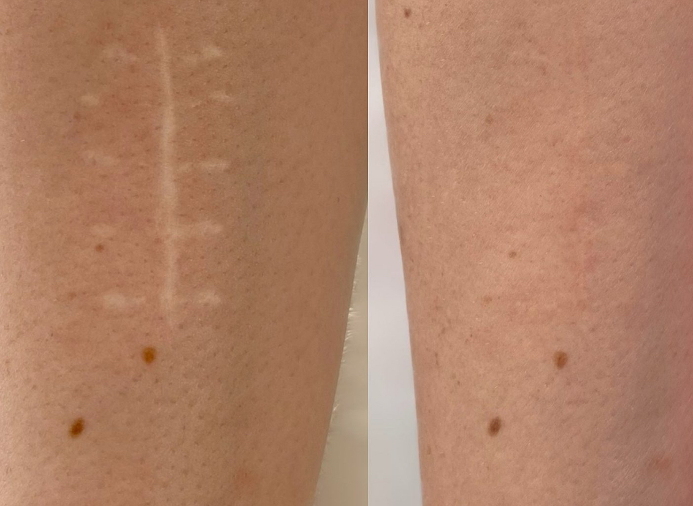
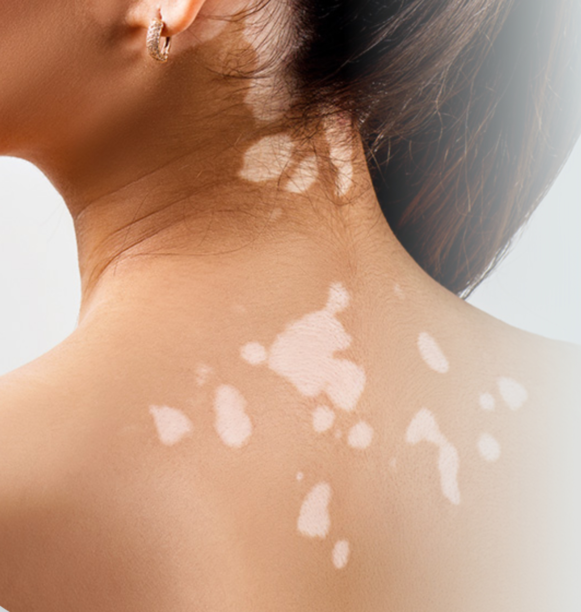

Pigmentazione medica
Pigmentazione dell'areola, delle cicatrici e della correzione del colore
Bellezza naturale, risultati duraturi
La pigmentazione medica (detta anche "trucco permanente medico" o "micropigmentazione paramedicale") serve al ripristino estetico dopo operazioni, incidenti o malattie della pelle.
Pigmentazione dell'areola
Ricostruzione della capezzolo
- Ripristino ottico della capezzolo e dell'areola ad esempio dopo intervento chirurgico o mastectomia
- Ombreggiatura 3D per un aspetto realistico e naturale
- Ripristino dell'aspetto naturale, rafforzamento dell'autostima

Pigmentazione delle cicatrici
Camuffamento cicatrici
- Camuffamento di cicatrici chiare o evidenti ad esempio dopo interventi chirurgici, ferite o acne
- I pigmenti vengono adattati al tono della pelle e applicati delicatamente
- Armonizzazione della cicatrice con la pelle circostante meno visibile

Armonizzazione del colore della pelle
Pigmentazione camouflage
- Compensazione dei disturbi di pigmentazione come vitiligine o aree iperpigmentate
- Inserimento preciso di pigmenti con colore abbinato
- Tono della pelle uniforme, riduzione dei contrasti ottici
Pigmentazione del cuoio capelluto (SMP)
Scopri di più
L'SMP è disponibile come trattamento separato.
Appuntamento
Desiderate una consulenza o volete prenotare un appuntamento? Contattatemi tramite WhatsApp o telefonicamente.
Prenota un appuntamento